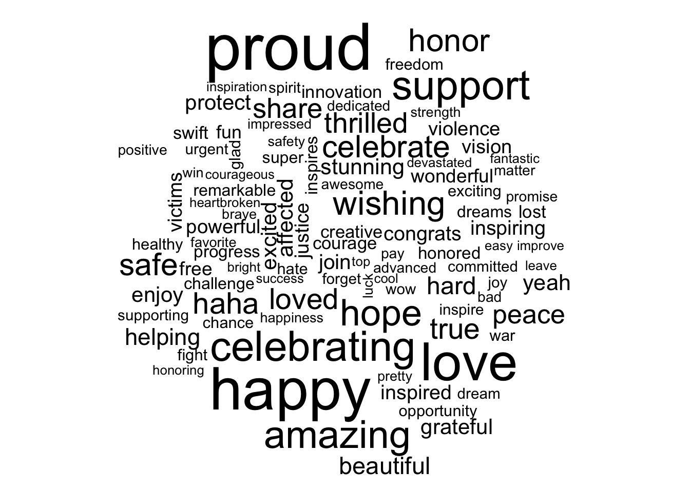
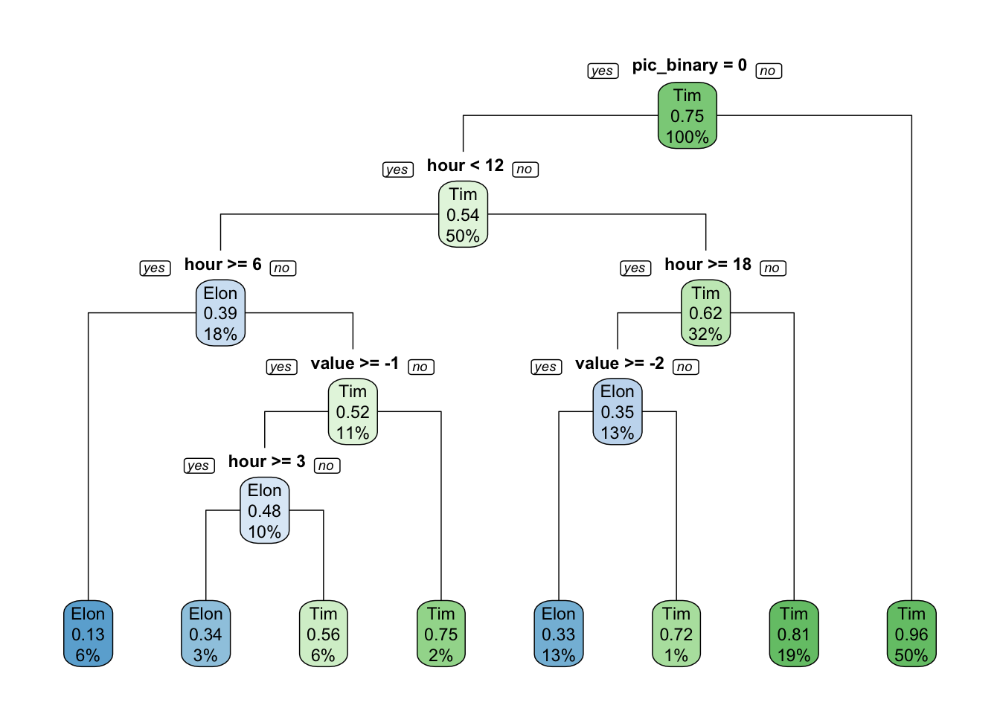

The Twitter Analysis: Elon Musk and Tim Cook
Electric Eels: Walid Hedidar, Aamia Malik, Michael Murphy, Jon Sirota, Cory Winkler, Jen Xue
BDS-516 HW09 - April 25, 2021
In this report, we analyze Elon Musk’s and Tim Cook’s tweets.
Introduction
For this assignment, we are interested in the tweets between Elon Musk and Tim Cook. Our main research question is: How do tweets from Elon Musk and Tim Cook differ?. Before starting the research process, we hypothesized that there will be a large difference in the sentiment of tweets; that is, we postulate than tweets from Elon Musk will incorporate more extreme sentiments that those from Tim Cook. Throughout this report, we will check if that hypothesis is valid or not. Additionally, we expect that Elon may have more tweets with pictures while also tweeting at more sproradic times of the day in comparison to Tim.
In sum, we have three hypotheses:
- Elon will have more extreme sentiment in his tweets, compared to Tim
- Tim will have fewer tweets with pictures/links, compared to Elon
- Elon will have more sporadic tweeting patterns, compared to Tim
Methodology
In order to investigate potential differences between the tweets of Elon Musk and Tim Cook, our methodology covered the following:
- Comparing time patterns between the tweets of both accounts. The purpose for this was to gather information about the times of the day during which both accounts tweet the most or the least.
- Comparing the number of tweets with or without pictures/links from both accounts. The purpose for this was to understand which account tends to use pictures/link more often.
- Tokenizing the tweets in each account. The purpose for this was to identify differences between popular words tweeted between both accounts and to conduct a sentiment analysis on each sample of tweets.
For our predictive algortihm, we divided our data into test and train data and trained the algorithm to identify the srouces of the tweet based on the following variables:
- Whether the tweet contained pictures/links
- The hour of the day during which the tweet was published
- The sentiment score using the AFINN dictionary
First, we are loading in the tweets from Elon Musk and Tim Cook, our two tweeters of interest.
#load data
setwd('~/Dropbox/516_Eels/HW_9')
elon = read_csv('elonmusk_tweets.csv')##
## ── Column specification ────────────────────────────────────────────────────────
## cols(
## id = col_double(),
## source = col_character(),
## created_at = col_datetime(format = ""),
## favorite_count = col_double(),
## retweet_count = col_double(),
## text = col_character()
## )elon$user = "Elon"
cook = read_csv('tim_cook_tweets.csv')##
## ── Column specification ────────────────────────────────────────────────────────
## cols(
## id = col_double(),
## source = col_character(),
## created_at = col_datetime(format = ""),
## favorite_count = col_double(),
## retweet_count = col_double(),
## text = col_character()
## )cook$user = "Tim"
combined <- rbind(elon, cook) #combine data frames
nrc <- read_rds("nrc.rds") #rds is native format for r data Here, we want to understand the differences in the times of tweets between users.
Tim Cook appears to tweet more often in the morning (between 7:00am - 10:00am), whereas Elon is much more likely to tweet in the very early morning / late night (12:00am - 5:00am). Tim’s tweet reach a significant peak toward 9:00am, which is a sign that there are potentially scheduled tweets that go out during that time of the day.
The steady rise and peak at 9:00am seen in Tim Cook’s tweets can suggest he may use an automated service, like tweetdeck, to tweet. Also, since many of his tweets are complete thoughts and sentences, rather than quick, single line comments, we can imply he plans out his tweets/communications ahead of time.
As for Elon, his tweets tend to be less-structured with less predictable timing. His second-highest peak, roughly at 6:00pm, can be fully realized by a tweet sent at 6:09pm on 4/10, stating, “Blimps rock”. A picture of a Goodyear blimp was included in the tweet.
#time of day of tweets
combined %>%
count(user, hour = hour(with_tz(created_at, "EST"))) %>%
mutate(percent = n/sum(n)) %>%
ggplot(aes(x = hour, y = percent, color = user)) +
labs(title = "Percentage of tweets based on time of day",
x = "Hour of day (EST)",
y = "% of tweets", color = "",
fill = "User") +
scale_y_continuous(labels = scales::percent)+
geom_line() + theme_bw()
Next, we were also interested in the differences between users’ tweets when it came to tweets that contained pictures/links.
We find that Tim Cook is much more likely to include a picture or a hyperlink in his tweets. Out of the total tweets in our dataset, the number of tweets with Picture/link for Elon is 159 while Tim has 768 tweets with either a picture or link.
Put otherwise, Tim Cook has a picture/link tweet rate of 68%, whereas Elon has a rate of 14%: for every one picture or link Elon tweets, Tim will tweet 5.
# Count the number of tweets with and without picture/links by device
pic_ct <- combined %>%
filter(!str_detect(text, '^"')) %>%
count(user,picture = ifelse(str_detect(text, "t.co"),
"Picture/link", "No picture/link"))
# Make a bar plot
ggplot(pic_ct, aes(x = user, y = n, fill = picture)) +
geom_bar(stat = "identity", position = "dodge") +
labs(title = "Tweets with(out) picture/link", x = "", y = "Number of tweets", fill = "") +
theme_bw()
This section analyzes the frequency of individual words.
The first thing we did was create a regex pattern that removed any unwanted symbols/characters.
# Create a regex pattern
reg <- "([^A-Za-z\\d#@']|'(?![A-Za-z\\d#@]))"
# Tokenize
tweet_txt <- combined %>%
filter(!str_detect(text, '^"')) %>%
mutate(text = str_replace_all(text, "@https://t.co/[A-Za-z\\d]+|&", "")) %>%
unnest_tokens(word, text, token = "regex", pattern = reg) %>%
filter(!word %in% stop_words$word,
str_detect(word, "[a-z]"))
tweet_txt <- tweet_txt[!grepl("@", tweet_txt$word),]
#the `reg` object wasn't removing the symbols as desired
tweet_txt <- tweet_txt[!grepl("https", tweet_txt$word),] Then, using the newly tokenized dataset, we show the words that occur most often in Elon’s tweets and Tim’s tweets. Unsurprisingly, Elon’s most-tweeted word is Tesla, followed by haha and Tim’s most-tweeted word is Apple and world.
tweet_txt %>%
group_by(user) %>%
count(word, sort = TRUE) %>%
head(40) %>%
mutate(word = reorder(word, n)) %>%
ggplot(aes(x = word, y = n)) +
geom_bar(stat = "identity", fill = "blue") + facet_wrap(~user) +
ylab("Occurrences") + xlab("Word") +
coord_flip() + theme_bw()Now, we begin our sentiment analysis.
We join the NRC dictionary to our data frame that contains the texts of the tweets, into a new data frame called tweet_sentiment. Then we assess each word and calculate a logarithmic ratio comparing the users to determine the difference. We take this log ratio, and plot it: for the words with the largest difference when it comes to being tweeted by either Elon or Tim, the top 15 are all words that coming from Elon.
#RATIO TIME
#join nrc first
tweet_sentiment <- inner_join(tweet_txt, nrc, by = "word") %>%
group_by(sentiment) %>% head(10)
#ratio of words and plot the ratio
tweet_ratio <- tweet_txt %>%
count(word, user) %>%
group_by(word) %>%
filter(sum(n) >= 5) %>%
spread(user, n, fill = 0) %>%
ungroup() %>%
mutate_if(is.numeric, ~((. + 1) / sum(. + 1))) %>%
mutate(logratio = log2(Elon / Tim)) %>%
arrange(desc(logratio))
tweet_ratio %>%
top_n(15, abs(logratio)) %>%
ungroup() %>%
mutate(word = reorder(word, logratio)) %>%
ggplot(aes(x = word, y = logratio, fill = logratio < 0)) +
geom_bar(stat = "identity") +
coord_flip() +
ylab("Elon / Tim ratio") +
scale_fill_manual(name = "", labels = c("Elon", "Tim"),
values = c("red", "lightblue")) #note it only has elon because the top 15 logratios are all ELon
Second, we begin assessing words by either positive or negative sentiment.
In general, it appears that Elon’s tweets have a stronger sentiment (i.e., more angry, more sad, more joyful) than Tim’s tweets. We draw this conclusion by examining the size of the red bars (Elon) in comparison to the light blue bars (Tim) for each general sentiment.
As seen throughout the previous questions, we can assume Tim uses twitter as a more professional means of communication, while Elon uses twitter as a normal, non-professional user would, to tweet about blimps and claim he is the ‘techno-king’ of his own company, Tesla. We see more instances of this dichotomy between Tim and Elon when we apply sentiment analysis to their tweets. Elon, as a whole, uses stronger sentiments (positive and negative)
What stands out the most here is Elon’s use of bad. It is his most used word among the disgust, fear, and sad sentiments, and the second most extreme word of anger. However, it is important to note that the most angered word of his is rocket, which could be used as proof against the efficacy of sentiment analysis in this case.
# we can't control the dictionary
#INDIVIDUAL SENTIMENT TIME
tweet_sentiment <- tweet_ratio %>%
inner_join(nrc, by = "word") %>%
filter(!sentiment %in% c("positive", "negative")) %>%
mutate(sentiment = reorder(sentiment, -logratio),
word = reorder(word, -logratio)) %>%
group_by(sentiment) %>%
top_n(15, abs(logratio)) %>%
ungroup()
# Plot the log odds ratio of words by user in groups of sentiments
ggplot(tweet_sentiment, aes(x = word, y = logratio, fill = logratio < 0)) +
facet_wrap(~ sentiment, scales = "free", nrow = 2) +
geom_bar(stat = "identity") +
theme(axis.text.x = element_text(angle = 90, hjust = 1)) +
labs(x = "", y = "Elon / Tim ratio") +
scale_fill_manual(name = "", labels = c("Elon", "Tim"),
values = c("red", "lightblue"))Algorithm to predict Elon’s versus Tim’s Tweets
In preparation of our decision tree, we select three input variables of interest: a) whether the tweet has a picture/link, b) the time of the tweet, and c) a sentiment score using the AFINN dictionary. We’ve also included a word cloud, out of interest.
#adding a 0/1 binary picture column to the "combined" data set
predictingtree <- combined %>%
filter(!str_detect(text, '^"')) %>%
mutate(user,
picture = ifelse(str_detect(text, "t.co"),
"Picture/link", "No picture/link")) %>%
mutate(pic_binary = case_when(picture == "No picture/link" ~ 0,
picture == "Picture/link" ~ 1))
levels(predictingtree$pic_binary) <- c("0","1") #standardize levels
#adding a variable for time of day
predictingtree <- predictingtree %>%
mutate(hour = hour(with_tz(created_at, "PST")))## Warning: Problem with `mutate()` input `hour`.
## ℹ unknown timezone 'PST'
## ℹ Input `hour` is `hour(with_tz(created_at, "PST"))`.## Warning in as.POSIXlt.POSIXct(x, tz = tz(x)): unknown timezone 'PST'#adding a variable of total sentiment of tweet
predictingtree <- predictingtree %>%
unnest_tokens(word, text, token = "tweets") %>%
inner_join(get_sentiments("afinn")) #using afinn dictionary (sentiments range from -5 to 5)## Using `to_lower = TRUE` with `token = 'tweets'` may not preserve URLs.## Joining, by = "word"predictingtree## # A tibble: 3,835 x 11
## id source created_at favorite_count retweet_count user picture
## <dbl> <chr> <dttm> <dbl> <dbl> <chr> <chr>
## 1 1.38e18 Twitt… 2021-04-11 15:48:58 71696 1528 Elon No pic…
## 2 1.38e18 Twitt… 2021-04-11 15:48:58 71696 1528 Elon No pic…
## 3 1.38e18 Twitt… 2021-04-11 14:49:38 1394 48 Elon No pic…
## 4 1.38e18 Twitt… 2021-04-10 23:56:43 2542 65 Elon No pic…
## 5 1.38e18 Twitt… 2021-04-10 23:54:51 2631 202 Elon No pic…
## 6 1.38e18 Twitt… 2021-04-10 19:49:26 4606 154 Elon No pic…
## 7 1.38e18 Twitt… 2021-04-10 19:46:36 8486 221 Elon No pic…
## 8 1.38e18 Twitt… 2021-04-10 08:32:35 2313 114 Elon No pic…
## 9 1.38e18 Twitt… 2021-04-10 08:23:03 3302 262 Elon No pic…
## 10 1.38e18 Twitt… 2021-04-10 08:23:03 3302 262 Elon No pic…
## # … with 3,825 more rows, and 4 more variables: pic_binary <dbl>, hour <int>,
## # word <chr>, value <dbl>predictingtree %>%
anti_join(stop_words) %>%
count(word) %>%
with(wordcloud(word, n, max.words = 100))## Joining, by = "word"## Warning in wordcloud(word, n, max.words = 100): congratulations could not be fit
## on page. It will not be plotted.## Warning in wordcloud(word, n, max.words = 100): celebrating could not be fit on
## page. It will not be plotted.
We split our data into train data, tree_train, and test data for later use, tree_test. Then, we generate a decision tree, first using tree_train.
As aforementioned, we are using an algorithm to classify who the tweeter is (Elon vs. Tim) as a function of a) whether the tweet has a picture/link, b) the time of the tweet, and c) the sentiment score per the AFINN dictionary.
As can be seen from the decision tree, tweets that are tweeted at 11pm, fall within the negative sentiment scale, and have a picture/link have an 80% chance of being tweet by Tim. Tweets that are tweeted before 11pm, have a negative sentiment and have no picture/link have a 42% chance of being tweeted by Elon. Additionally, more positive tweets with no picture/link have a 94% chance of being tweeted by Tim Cook.
#making train and test data
set.seed(321)
split = sort(sample(nrow(predictingtree), nrow(predictingtree)*.8))
tree_train <- predictingtree[split,]
tree_test <- predictingtree[-split,]
#decision tree
tweet_tree <- rpart(formula = user ~ pic_binary + hour + value,
data = tree_train,
method = "class")
rpart.plot(tweet_tree, yesno = 2, type = 1)
To understand the algorithm’s effectiveness on new tweets from Elon and Tim, we use a confusion matrix on the test data.
As can be seen from our confusion matrix, the algorithm has an overall accuracy of 82% with the current variables included. It shows higher predictability for Elon’s tweets versus those of Tim. But, overall, the algorithm is very well predictive of tweets from both accounts.
#predict using test data
tweet_predict <- predict(tweet_tree, tree_test, type = "class")
#confusion matrix
confusionMatrix(as.factor(tree_test$user), as.factor(tweet_predict))## Confusion Matrix and Statistics
##
## Reference
## Prediction Elon Tim
## Elon 100 77
## Tim 52 538
##
## Accuracy : 0.8318
## 95% CI : (0.8034, 0.8576)
## No Information Rate : 0.8018
## P-Value [Acc > NIR] : 0.01926
##
## Kappa : 0.5016
##
## Mcnemar's Test P-Value : 0.03459
##
## Sensitivity : 0.6579
## Specificity : 0.8748
## Pos Pred Value : 0.5650
## Neg Pred Value : 0.9119
## Prevalence : 0.1982
## Detection Rate : 0.1304
## Detection Prevalence : 0.2308
## Balanced Accuracy : 0.7663
##
## 'Positive' Class : Elon
##